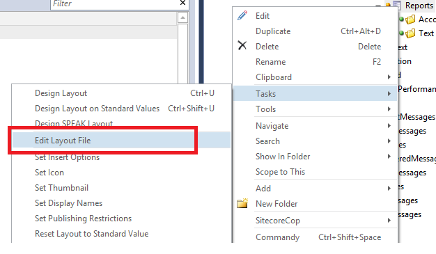

Sitecore SPEAK - Edit Layout File
When I edit a SPEAK page, I usually use the “Task->Design Layout” command in Sitecore Rocks and add renderings from there. It is fine if the page doesn’t contain too many rendering components.
However, it could be a headache to maintain a page that has a lot renderings. For example, I have page like this.

It could be painful to move the renderings around or insert a new rendering in the middle of the page.
Another scenario could be that the page has a lot of renderings of some same components. It would be boring to add them without the ability to use copy function.
Actually, each SPEAK page’s layout is a XML file. Moreover Sitecore Rocks does give us the ability to edit the XML file.
The trick is to use the “Task -> Edit Layout File” command. To me, it is a more confidence and pleasant way to edit my long renderings list.

Comments !